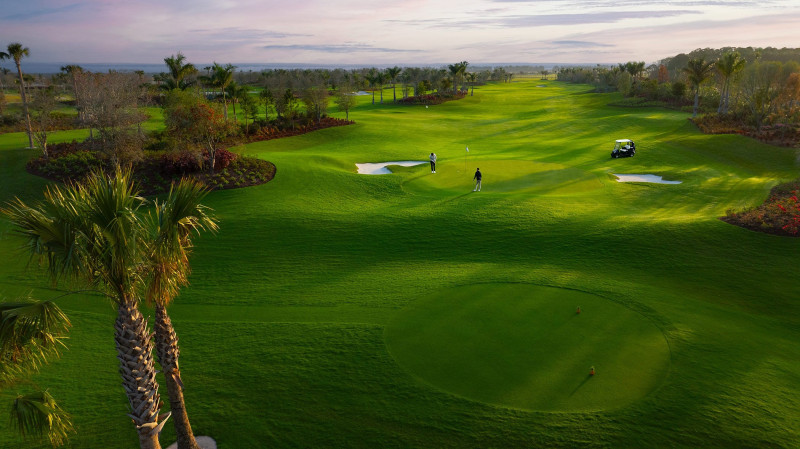
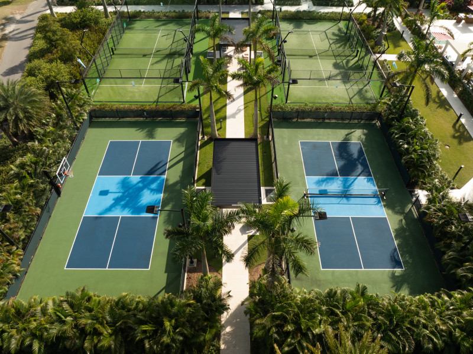
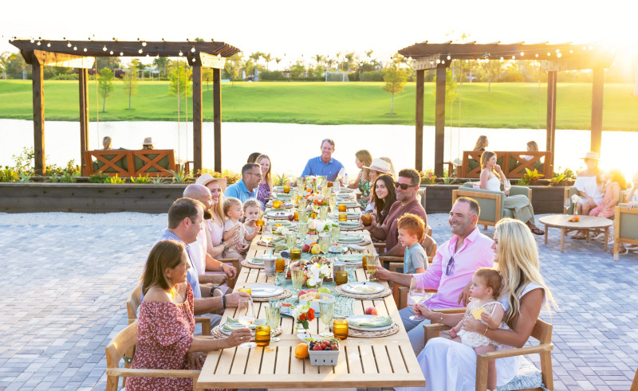
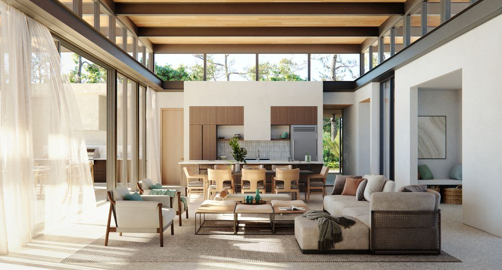
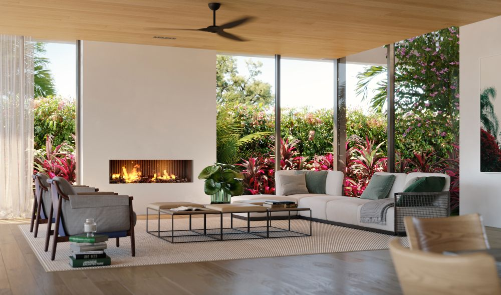

Atlantic Fields
A 1,500-acre Tom Fazio private golf community in Hobe Sound - Discovery Land Company's first East Coast property, and ACG's home for three completed glazing projects with more in bidding.
Discovery Land's first Florida community.
Atlantic Fields is the East Coast debut of Mike Meldman's Discovery Land Company - a 1,500-acre private golf community in Martin County's Hobe Sound, less than 30 minutes north of Palm Beach International Airport. Developed with the Becker Holding Corporation on a former citrus farm and the historic Hobe Sound polo grounds, the community holds 317 home sites around a Tom Fazio-designed 18-hole championship course, a 10-hole short course, and a Discovery Performance Center. It shares an entrance drive with Michael Jordan's Grove XXIII and borders the 6,000-acre Atlantic Ridge Preserve State Park. The championship course opened for play in late 2025.
Three projects, one community.
When Discovery Land brought its first Florida community to Hobe Sound, Proctor Construction selected ACG as the glazing contractor of record. Three buildings are complete - each with its own case study - and ACG is bidding additional scopes inside the gates as the community's permanent buildings come online.


A community defined by old-Florida grace.





The community by the numbers.
1,500 acres · 317 home sites
Built on a former citrus farm and the historic Hobe Sound polo grounds at 2645 Southeast Bridge Road, less than 30 minutes from Palm Beach International Airport.
Two courses
An 18-hole Tom Fazio championship course that opened for play in late 2025, plus a 10-hole short course with more than 120 routing options and 37 tee boxes.
6,000-acre preserve buffer
The community borders the unspoiled Atlantic Ridge Preserve State Park and shares an entrance drive with Michael Jordan's Grove XXIII.
Full amenity program
Discovery Performance Center, equestrian center and polo, Lake Club and water sports, adventure and family park, wellness and spa center, kids' club and waterpark, arts and crafts barn, and Discovery's Outdoor Pursuits program.
ACG's role
Glazing contractor of record on three completed buildings - the Sales Center, the Golf House, and the Discovery Performance Center - all under GC Proctor Construction, with additional scopes in bidding.
The wellness standard
"It's going to be one of the most comprehensive wellness programs in the world." - Mike Meldman, Chairman & Founder, Discovery Land Company.
Atlantic Fields, answered.
Where is Atlantic Fields located?
Atlantic Fields is in Hobe Sound, Florida - Martin County, on the Treasure Coast. The community spans 1,500 acres at 2645 Southeast Bridge Road, less than 30 minutes from Palm Beach International Airport. It shares an entrance drive with Michael Jordan's Grove XXIII and borders the 6,000-acre Atlantic Ridge Preserve State Park.
Who is the developer?
Atlantic Fields is being developed by Discovery Land Company in partnership with the Becker Holding Corporation. It is Discovery Land Company's first community on Florida's east coast. Mike Meldman is the chairman and founder of Discovery Land Company.
Who designed the golf course?
The 18-hole championship course was designed by Tom Fazio and opened for play in late 2025. The 10-hole short course features more than 120 routing options and 37 tee boxes.
Who is the glazing contractor?
American Commercial Glass (ACG) is the glazing contractor of record on the projects ACG has executed at Atlantic Fields, working under general contractor Proctor Construction. ACG has completed three buildings inside the community to date - the Sales Center, the Golf House, and the Discovery Performance Center - and is bidding additional scopes.
How many homes are at Atlantic Fields?
Atlantic Fields will have 317 single-family custom-estate home sites on its 1,500-acre footprint.
More club & hospitality work.


Bidding a scope at Atlantic Fields?
ACG already knows the property's standards and Proctor Construction's submittal cadence. Send drawings - a scoped proposal comes back in 48 hours.